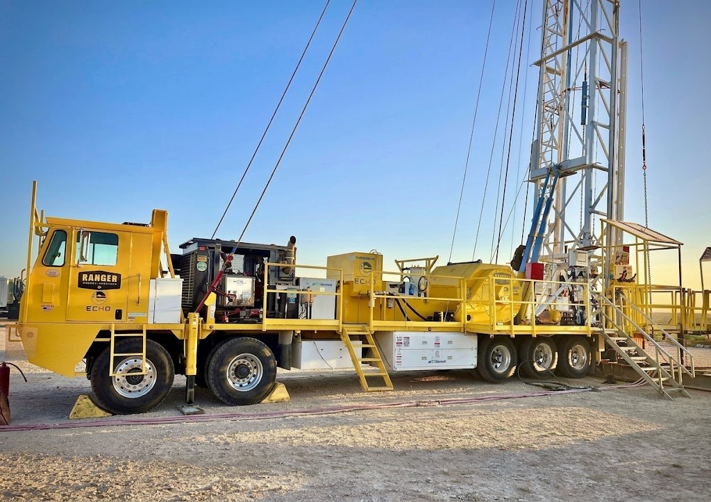
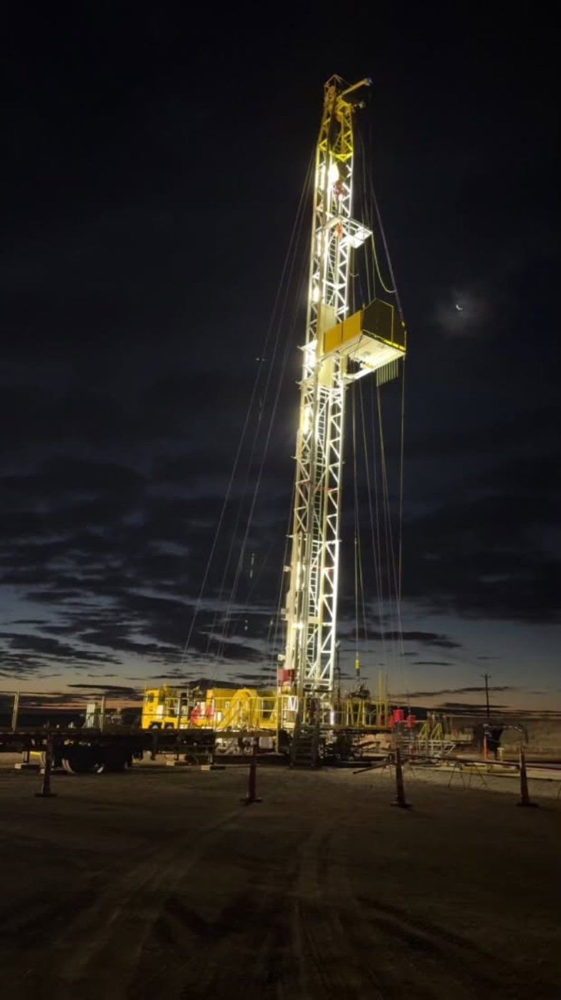
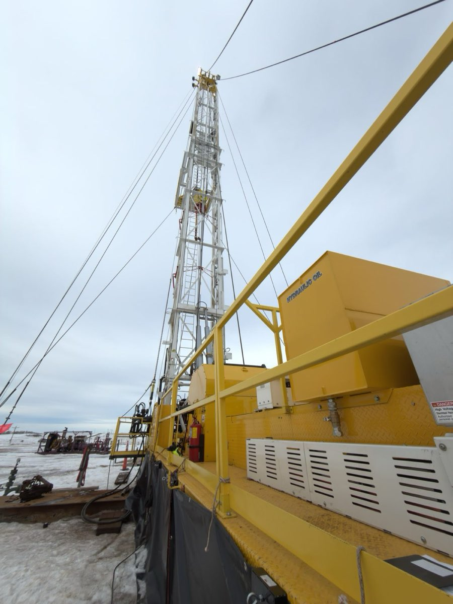

Mobile Equipment Electrification
Test automation and field tuning for hybrid battery-electric oilfield rigs, as the conversion kit moved from a single prototype into production.

The system
Workover rigs traditionally run a diesel engine flat-out all day. The conversion kit moves the drivetrain, winch and auxiliary systems onto a battery-electric powertrain and keeps the diesel only as a range extender, cutting engine runtime by more than 85%.
Each kit is a network of CAN-connected control modules for hydraulics, gearbox, thermal management, charging, high voltage and low-voltage power, coordinated by a vehicle controller. After the prototype proved out, the kit went into production, and more than ten have been built since.
Testing for production
A prototype can be debugged by the people who designed it. A production line can't, so every module needed a repeatable way to be proven good before it shipped.
- Built CODESYS test dashboards for every control module in the kit, flashed onto the module controllers so shop technicians can validate IO and CAN communication without an engineer present.
- Pass/fail indicators, live comms monitoring and raw analog voltages for quick diagnosis, with manual pump control for thermal checks.
- Charger control and feedback tested against a simulated battery load.
- Automatic firmware detection by decoding J1939 multi-frame broadcast messages.
- Cross-checked software IO against the electrical schematics and sent every discrepancy back to the electrical team.
- Wrote the manuals, test plans and flashing procedures, trained shop staff, and set up a request channel so testers could ask for the features they needed.
In the field
Winter service trips to rigs in North Dakota, Colorado and Texas, working next to the operators who run them every day.
- Deployed new vehicle controller releases built in Simulink, then load-tested them to 100,000 lb.
- Tuned brake release, droop mitigation, drum speed, speed ramps and low-gear behaviour based on how the operators wanted the rig to feel.
- Traced rig instability to a CAN database mismatch after a traction-inverter firmware change, then corrected the inverter parameters and derating margins.
- Wrote a lossless flashing procedure so controllers could be updated in the field without losing their calibration.
Photos

